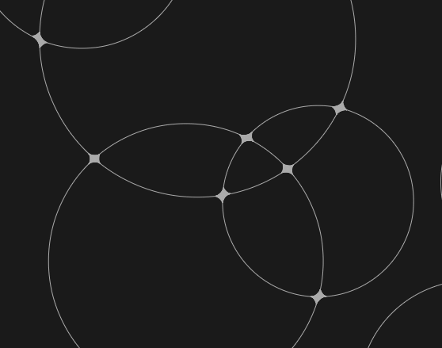

円の交点部分を塗る
実行例

解説/アルゴリズム
const n = 10;
for (let i = 0; i < n; i++) {
const x = p.random(p.windowWidth);
const y = p.random(p.windowHeight);
const r = p.random(100) + 100;
circles.push({ x, y, r });
p.circle(x, y, r * 2);
}
n 個の円をランダムに描く。
const k = 720;
points[i] = [];
for (let j = 0; j < k; j++) {
const rad = (p.TWO_PI / k) * j;
const tx = x + Math.cos(rad) * r;
const ty = y + Math.sin(rad) * r;
points[i].push({ x: tx, y: ty });
}
描いた円ごとに、円周上の位置を等間隔に k 個覚えておく。
const threshold = 10;
for (let i = 0; i < n; i++) {
for (let j = i + 1; j < n; j++) {
const a = circles[i];
const b = circles[j];
if (a.r + b.r < p.dist(a.x, a.y, b.x, b.y)) continue;
for (const c of points[i]) {
for (const d of points[j]) {
if (p.dist(c.x, c.y, d.x, d.y) < threshold) {
p.line(c.x, c.y, d.x, d.y);
}
}
}
}
}
円を 2 つ取り出し、それぞれ a, b とする。
a, b それぞれの円周上の位置同士の距離が threshold 未満なら a から b まで線を引く。
注意点
円が大きい、あるいは円周上の位置の数が少ないと線の網目の穴が見えてしまう。
ただし、計算量は と大きいので、 n や k の数を増やすと一気に重くなる。
コード例
import * as p5 from "p5";
type Point = {
x: number;
y: number;
};
type Circle = {
x: number;
y: number;
r: number;
};
new p5((p: p5) => {
p.setup = () => {
p.createCanvas(window.innerWidth, window.innerHeight).parent(
"canvas-container"
);
reset();
};
p.mouseClicked = () => {
reset();
};
function reset(): void {
p.clear();
p.noFill();
p.stroke("#aaa");
const circles: Circle[] = [];
const points: Point[][] = [];
const n = 10;
const k = 720;
for (let i = 0; i < n; i++) {
const x = p.random(p.windowWidth);
const y = p.random(p.windowHeight);
const r = p.random(100) + 100;
circles.push({ x, y, r });
p.circle(x, y, r * 2);
points[i] = [];
for (let j = 0; j < k; j++) {
const rad = (p.TWO_PI / k) * j;
const tx = x + Math.cos(rad) * r;
const ty = y + Math.sin(rad) * r;
points[i].push({ x: tx, y: ty });
}
}
const threshold = 10;
for (let i = 0; i < n; i++) {
for (let j = i + 1; j < n; j++) {
const a = circles[i];
const b = circles[j];
if (a.r + b.r < p.dist(a.x, a.y, b.x, b.y)) continue;
for (const c of points[i]) {
for (const d of points[j]) {
if (p.dist(c.x, c.y, d.x, d.y) < threshold) {
p.line(c.x, c.y, d.x, d.y);
}
}
}
}
}
}
});